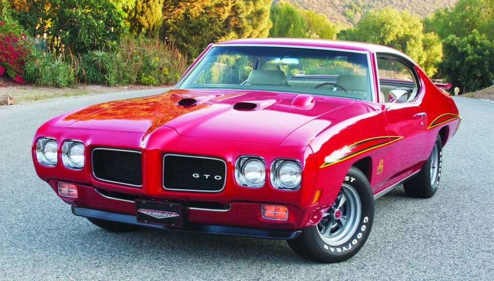
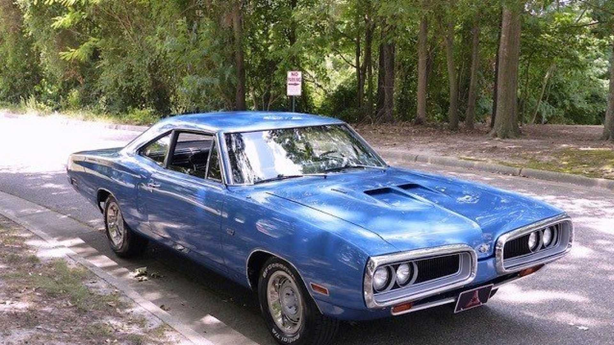
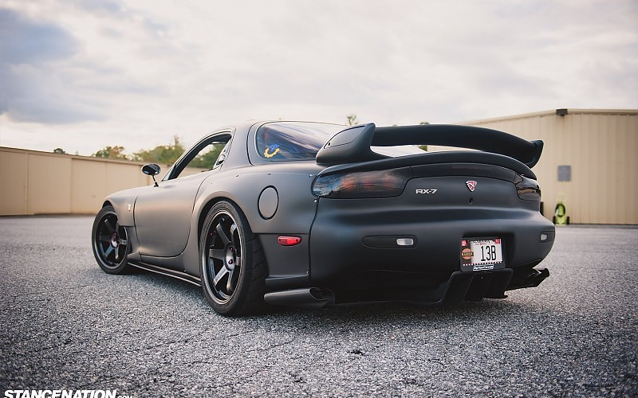
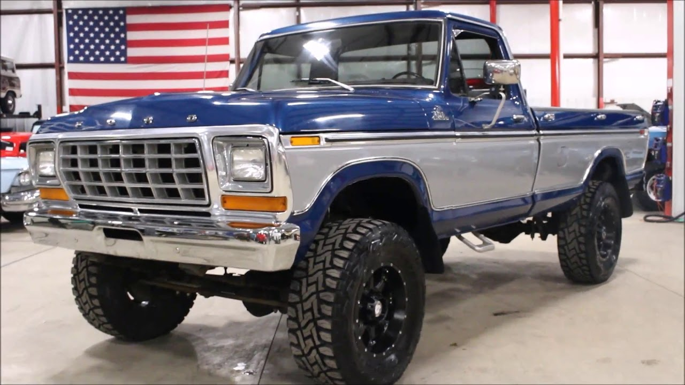

My Favorite Vehicles Of All Time
1970 Pontiac GTO(dream car)
The 1970 GTO had an attractive restyled front-end treatment that had a quad headlight design now separate from the dual front grilles and embedded into the Endura front bumper. This was a great styling touch along with the new fender creases found on the top of each wheel well and the revised rear bumper and taillight design.
1970 Dodge Super Bee
The original Dodge Super Bee was based on the Dodge Coronet two-door coupe, and was produced from 1968 until 1970. It was Dodge's low-priced powerful muscle car and a rebadged version of the Plymouth Road Runner. The origin of the name, "Super Bee", has its basis in the "B" Body designation pertinent to Chrysler's mid-sized cars, including the Road Runner and Charger.
2000 Mazda Rx-7
The Mazda RX-7 is a front/mid-engine, rear-wheel-drive rotary engine powered sports car that was manufactured and marketed by Mazda from 1978 to 2002 across three generations, all of which made use of a compact, lightweight Wankel rotary engine. The first generation of the RX-7, SA and FB, was a two-seater coupé.
1979 Ford F250
In 1978, the 351 Cleveland V-8 replaced the 302 Cleveland V8 in the F-250 and F-350. The 302 Cleveland continued alongside the 351 Cleveland in the F-100. The 4.1 litre inline 6 cylinder continued to be sold across the range. In 1979, the 302 Cleveland was discontinued, leaving the standard engine as the 4.1 litre Straight-6, with the 351 Cleveland (badged as the 5.8), as the only upgrade, except the F-100 4x4's which was only available with the 5.8 litre V8. The F-250 and F-350 had an automatic gearbox as an option for the first time in Australia, though still only on the V8 engine.